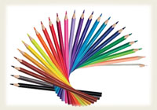

«Сила цвета» (Программа из 10 занятий)
Арт-терапевтический тренинг «Сила цвета» прекрасная возможность легко и творчески выразить себя.
В программе тренинга:
- спонтанное рисование;
- коллаж;
- коллективная мандала;
- танцедвигательная терапия;
- изготовление открыток с помощью техники «монотипии» и многое другое
Занятия проходят под гармоничную, спокойную музыку.
Используемые материалы: акварель, гуашь, пастель (сухая, масляная), сангина, восковые мелки, цветные карандаши, фломастеры, уголь, природные материалы (ракушки, камни, шишки, жёлуди…).
Эта программа направлена умения организовывать свою жизнь, гармонизировать отношения с окружающими, понять природу внутриличностных конфликтов.
В результате тренинга:
• улучшается память;
• приобретаются коммуникативные качества;
• происходит гармонизация психоэмоционального состояния;
• развиваются творческие способности.
Будьте счастливы и целостны!!!
|